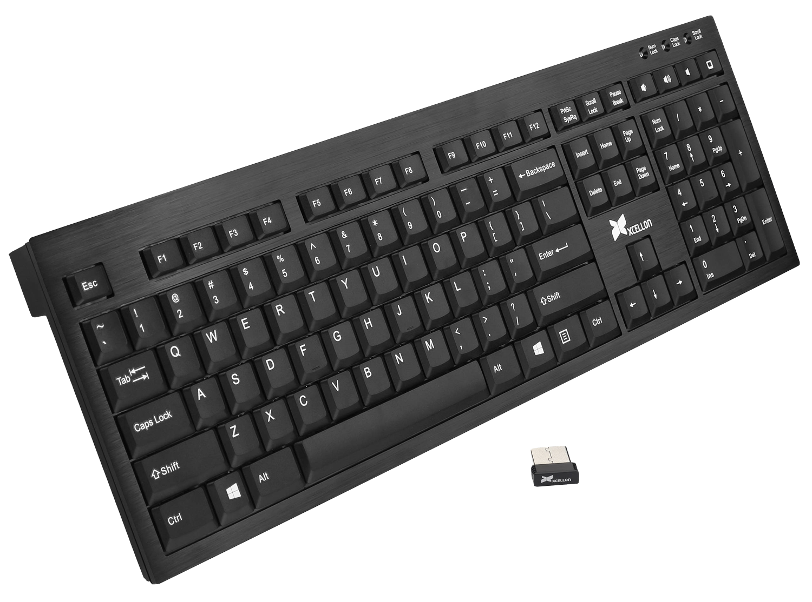

The keyboard of a computer is one of the main input devices and is used to enter letters, symbols or numbers or commands that activate some type of program or a certain action.
Is a device or peripheral input, partly inspired by the keyboard of typewriters, which uses a privision of buttons or keys, to act as mechanical levers or electronic switches that send information to the computer.
After the punched cards and paper tapes, the interaction through the keyboards, in the teletype style, became the main input device for computers.